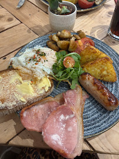
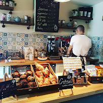
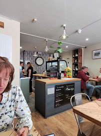
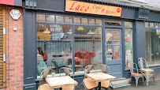
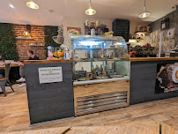
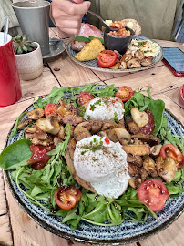
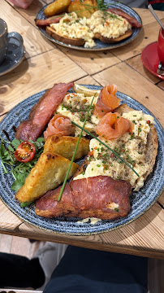
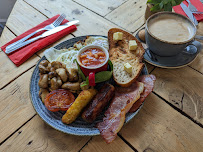

Independent Café & Bistro • Little Underbank, Stockport
Good food, proper coffee,
no rush.
All-day breakfast, bistro lunches, home-baked cakes and a dog waiting under every other table.
🐾 Dog friendly

About Laco
A proper neighbourhood café on Little Underbank
Laco Café & Bistro sits right in the heart of Stockport's Little Underbank, serving honest breakfasts, bistro plates and cakes baked on site. It's the kind of place where the coffee machine is always warm, the tables are wooden and well-worn, and regulars get their order started before they've sat down.
Whether you're in for a quick flat white and pastry on the counter, a full plate before work, or a long lunch with friends (and the dog), Laco is built around slowing down for a bit.
Inside Laco
A look around





Visit Us
Find Laco Café & Bistro
- Address32 Little Underbank, Stockport SK1 1JT
- Phone0161 480 4100
- Emailhello@lacocafe.co.uk
- Good to knowDog friendly throughout